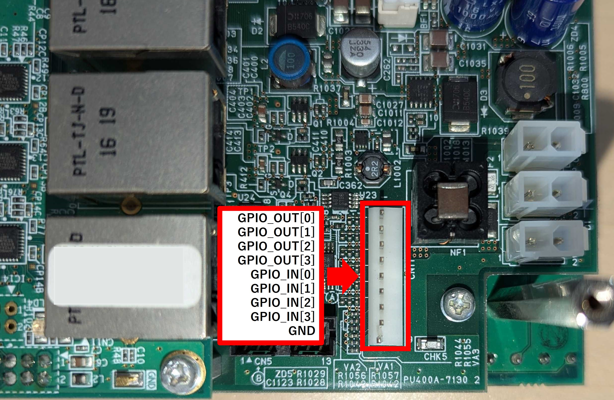

GPIOOutputs
GPIOOutputsを送信することで, GPIOピンの出力を各デバイス・ピン毎に設定できる.

use autd3::prelude::*;
fn main() {
let _ =
GPIOOutputs::new(|_dev, gpio| {
if gpio == GPIOOut::O0 {
Some(GPIOOutputType::BaseSignal)
} else {
None
}
});
}#include<autd3.hpp>
int main() {
using namespace autd3;
GPIOOutputs([](const auto& dev,
const auto& gpio) -> std::optional<GPIOOutputType> {
if (gpio == GPIOOut::O0)
return GPIOOutputType::BaseSignal;
else
return std::nullopt;
});
return 0; }
using AUTD3Sharp;
using AUTD3Sharp.Utils;
new GPIOOutputs(
(dev, gpio) => gpio == GPIOOut.O0 ? GPIOOutputType.BaseSignal : null
);
from pyautd3 import GPIOOutputs, GPIOOutputType, GPIOOut
GPIOOutputs(
lambda _dev, gpio: (
GPIOOutputType.BaseSignal if gpio == GPIOOut.O0 else None
),
)
出力可能なデータは以下の通り.
BaseSignal: 基準信号 (超音波と同じ周波数のDuty比50%矩形波)Thermo: 温度センサーがアサートされているかどうかForceFan: ForceFanフラグがアサートされているかどうかSync: EtherCAT同期信号ModSegment: ModulationのセグメントModIdx(u16): Modulationのインデックスが指定した値のときにHighになるStmSegment: STMのセグメントStmIdx(u16): STMのインデックスが指定した値のときにHighになるIsStmMode: FociSTM/GainSTMが使用されているかどうかPwmOut(&Transducer): 指定した振動子のPWM出力SysTimeEq(DcSysTime): 指定したシステム時間の間HighになるSyncDiff: システム時間の補正中にHighになるDirect(bool): 指定した値を出力する